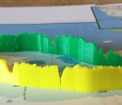

Pulling information off the screen
Increasing understanding and engagement with data physicalizations
Andrew M Staroscik, PhD
December 2016
Data Physicalization - a physical artifact whose geometry or material properties encode data
- Long history
- Diverse examples
- Broad applicability
- Becoming easier and easier to do
dataphys.org
Primary source for historical information, literature, and examples
- 257 entries (as of 12/2016)
- 5500 BC - present day
- Examples from around the world
Distribution of Harvard students 6 years after graduation
Franfurt Streetcar Load - 1913
Average number of passengers carried between two stops
Factory Worker Hand Motion - 1915
Wire diagram of hand motion while operating a drill press
A year of daily energy consumption in Detroit
A series of Prudential ads using physical props to help illustrate financial planning considerations
A bracelet that encodes a year of daily temperatures and weekly rainfall

3D paper model of water loss in the Aral Sea
physical representations of scientific data - 2004
Work research at Brown University using 3D printing to create physical representations of scientific data
Differences in height capture regions of high and low rainfall.
Ability to manipulate the model provides strong perception of spatial relationship between regions.
Model helps show spatial relationships.
Personal connection with data increases engagement.
Engagement increases understanding of local features.
Bringing volumes into real space makes relationships easier to compare.
Data Physicalizations as props / performance.
Provides the opportunity to make personal connection with the data.
Benefits
- Provide an engaging experience
- Offer novel perspective
- Increase memorability
- Allow personal connection to information
- Improve understanding of scales and relationships
- Make an emotional Impact
Technical Considerations
-
Process does not scale
- Numbers
- Size
- 2d layering introduces mechanical weaknesses
- Limited number of geometries possible
- Technical skill and proper equipment required